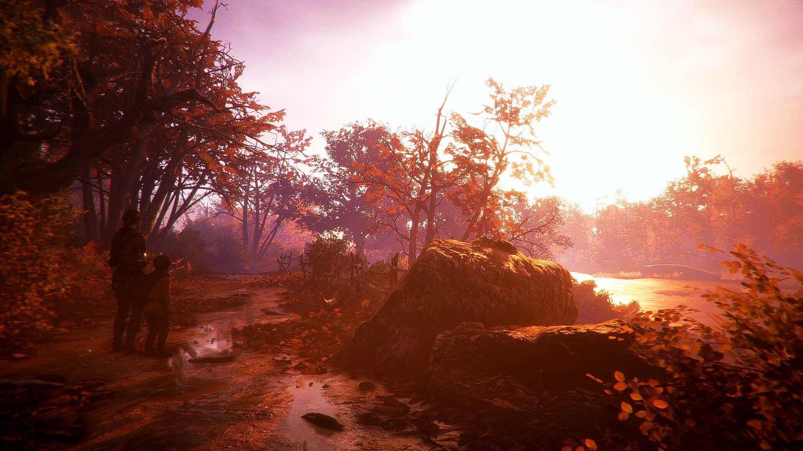

Что нового?
Улучшения графики и технологий
Улучшенный движок Naughty Dog: Uncharted 4 работает на улучшенном движке, который позволяет добиться реалистичной графики. Динамическое освещение, высокодетализированные текстуры, тени и эффекты погодных условий делают игру одной из самых красивых на момент её выхода. Реалистичные анимации: Использование технологии захвата движений позволило создать более реалистичную мимику и движения персонажей. Персонажи реагируют на окружающую среду (например, отмахиваются от листвы, если проходят через джунгли). .

Многопользовательский режим
Онлайн сражения: В игре представлен многопользовательский режим, где игроки могут сражаться в командах. Введены особые способности, такие как вызов духовных помощников (механика, вдохновлённая мифологией серии). Настройка персонажа: Игроки могут настраивать внешний вид своих героев и выбирать уникальные способности.

Новый уровень кинематографичности
Динамичные экшен-сцены: Такие сцены, как погоня на джипах или сражение на движущемся поезде, стали настоящими кинематографическими моментами, которые оставляют сильное впечатление. Эмоциональные диалоги: Разговоры между персонажами не только раскрывают их характеры, но и органично вписываются в игровой процесс.